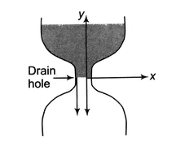
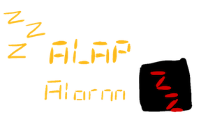
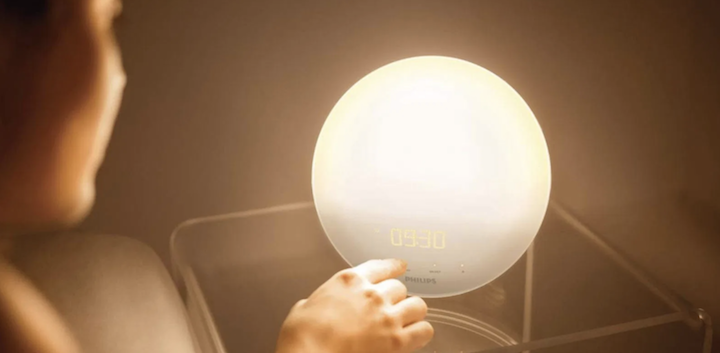
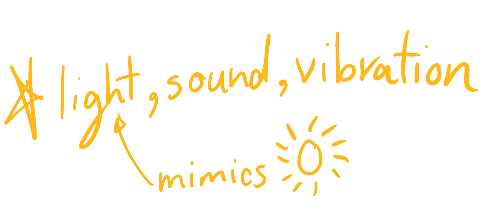
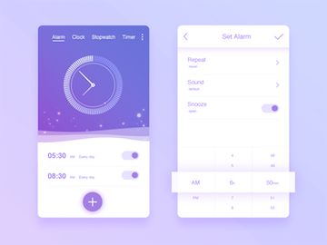
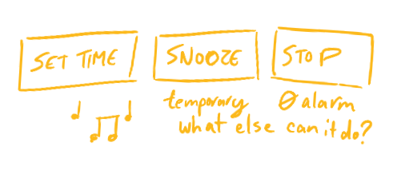

alarm clocks were designed to alert an individual at a specified time.
normally, they are used to wake up someone up from a nap or sleeping.
how rude right ☕︎?
now, lets get into some history.
before alarm clocks, water clocks1 helped:
- measure time 🕖
- announce prayer/meetings 🙏
725 CE
Yi-Xing, a buddhist monk 🌏:
devised the first model of a mechanical, striking clock2.
~ 14th century
clock towers in europe were capable of chiming at fixed times. 👌👌👌
1787
First American 🇺🇸mechanical alarm clock3Levi Hutchins.
1847
Antoine redier, a French 🇫🇷inventor, patents an adjustable alarm clock (the user sets their own time to wake up)
~1876
🚚mass production of alarm clocks to ensure people🏭🏃💨 had a means to get to work on time4.
20th century to now
music & the snooze function added. Users wanted to wake up to their own type of alarm and delay the alarm 😴.
Choose how to wake up today:
- sound
- light
- vibration
BEEP
BEEP
BEEP
LIGHT
BUZZ
- 
water is drained slowly and evenly out of the container. there are markings inside indicated the hour and an observer can use the water level to know how much time has passed. - the clock was operated by water and powered a iron + bronze wheel system that made one full rotation in 24 hours. It caused the clock to chime on the hour.
- One disadvantage: the alarm set off at 4am (the time Hutchins went to work) 🤦♂️.
- there was initial resistance to the alarm clock so in England and Ireland people hired a “knocker-upper”
DRIP
7-segment LED display
    